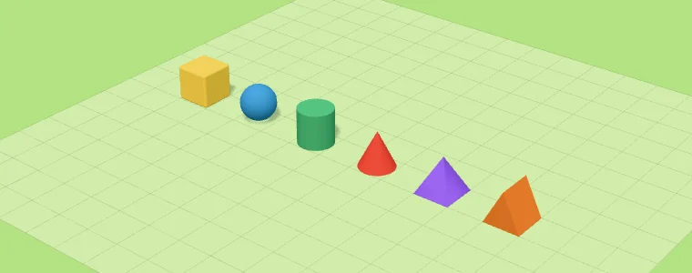
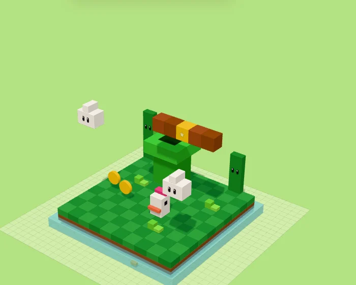
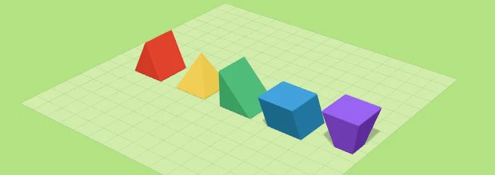

Construir B
Haz clic en el piso para poner una pieza, y sobre una cara para pegar otra encima o a un lado. Antes del clic ves dónde va a quedar.
- Ctrl/⌘ + arrastrar: construye de corrido, en un solo paso de deshacer.
CuboStudio es un editor de figuras 3D hechas de cubos, al estilo de Pokémon Quest y Crossy Road. Funciona en tu navegador, no necesita cuenta y todo se guarda solo.

La primera pantalla y cómo arrancar.

La primera vez que abres CuboStudio (o si ya no tienes figuras) se abre Mis figuras con la bienvenida. Desde ahí puedes:
Todo lo que ves de un vistazo.

| Quiero… | Cómo |
|---|---|
| Girar alrededor | Arrastra con el botón izquierdo sobre el piso o el cielo. |
| Desplazar | Arrastra con el botón derecho. |
| Acercar / alejar | Rueda del mouse o pellizco en el trackpad. |
| Ver de frente, de lado… | Teclas 1 a 5 o los botones de arriba. |
| Encuadrar la figura | F |
Poner, quitar y pintar piezas, con su forma, opacidad y brillo.
Están en la barra de la izquierda; cada una tiene su tecla. Con Construir y Caja pones piezas, con Borrar las quitas, y con Pintar, Rellenar y Gotero trabajas el color. El color se elige en el panel de la derecha.
Haz clic en el piso para poner una pieza, y sobre una cara para pegar otra encima o a un lado. Antes del clic ves dónde va a quedar.

Arrastra un rectángulo sobre el piso y gira la rueda del mouse para darle altura. Al soltar, se llena de cubos.

Haz clic en una pieza para quitarla.

Mantén el clic y arrastra sobre las piezas para pintarlas de corrido. Conservan su forma; sólo cambia el color.

Un clic pinta todas las piezas conectadas del mismo color, como una cubeta de pintura.

Haz clic en una pieza para tomar su color; después regresas solo a la herramienta que usabas.
No todo tiene que ser cubo.
Dónde: en el panel de la derecha, abajo de los colores. Sale al elegir Construir o Caja, y al seleccionar piezas.
Cómo: elige una forma y lo que construyas sale con ella. Con piezas seleccionadas, cambia la forma de lo seleccionado.


| Forma | Ideal para | Límites |
|---|---|---|
| Cubo | Cuerpos, paredes, pisos: casi todo. | Ninguno: es la única que se fusiona, deforma y extruye. |
| Esfera | Ojos, narices, frutas, nubes. | No se fusionan, ni se deforman, ni se extruyen. |
| Cilindro | Troncos, patas, tubos, ruedas. | |
| Cono | Picos, cuernos, sombreros. | Lo mismo que la esfera. Además apuntan hacia afuera de la cara donde haces clic; para cambiarles la dirección, gíralas con Seleccionar. |
| Pirámide | Techos y puntas. | |
| Cuña | Rampas, techos de dos aguas, picos de ave. |
Dónde: la barra Opacidad, en el panel de la derecha, debajo de los colores. Sale al construir, al pintar y al seleccionar piezas.
Cómo: bájala (10–100 %) para hacer agua, vidrio o hielo. Se aplica a lo que construyes o pintas, o a lo que tienes seleccionado. Dentro de las piezas transparentes se puede seguir construyendo, por ejemplo peces dentro del agua.


Dónde: la casilla Brilla, justo debajo de Opacidad.
Cómo: márcala y la pieza se ve en su color pleno e ilumina lo que tiene cerca con luz de su color: lámparas, fuego, lava u ojos encendidos. Como la opacidad, se aplica a lo que construyes o a lo que tienes seleccionado.

Mover, girar, escalar, agrupar, fusionar, deformar y extruir.
Están en la barra de la izquierda, arriba de todo. Hay dos formas de seleccionar. Con Seleccionar eliges pieza por pieza con clics; con Selección rectangular arrastras un rectángulo y tomas muchas de golpe, también las que quedan atrás. Lo seleccionado se resalta en azul con su forma real, y un clic en el piso deselecciona.

Un clic elige una pieza. Un clic en el piso deselecciona.

Arrastra y se selecciona todo lo que quede dentro, también lo de atrás.
Dónde: al seleccionar, aparece una barrita flotante debajo de lo seleccionado.
Cómo: elige un modo (mover, girar, escalar…) o una acción. Esto hace cada botón:

| Botón | Para qué |
|---|---|
| Sólo seleccionar | Sin flechas ni manijas: junta varias piezas sin que nada estorbe. |
| Mover | Flechas X / Y / Z, en pasos de 0.1. |
| Girar | Aros de 90°. |
| Escalar | Manijas en las caras (crece hacia ese lado) y esquinas amarillas (crece parejo). |
| Deformar · Extruir | Cambiar la forma de una cara o sacar piezas nuevas (más abajo). |
| Agrupar · Fusionar | Unir piezas para seleccionarlas juntas, o volverlas una sola. |
| Duplicar · Copiar · Eliminar | Ver Imanes, copiar y pegar. |

Jala una flecha para mover en ese eje, en pasos de 0.1.

Jala un aro para girar 90° sobre ese eje.

Jala la manija de una cara para crecer hacia ese lado, o una esquina amarilla para crecer parejo.

Une varias piezas: un clic en cualquiera selecciona el grupo completo, y al pasar el mouse se resalta todo.

Une cubos de un solo color en una sola pieza: un bloque, o una forma como L, E o T, con orillas limpias.
Rampas, techos, pirámides… a partir de un cubo o bloque.
Dónde: en la píldora, con un cubo o bloque seleccionado.


Sacar piezas nuevas de una cara: cuellos, patas, ramas.
Dónde: en la píldora, con un cubo o bloque seleccionado.

Ayudas para acomodar con precisión y repetir piezas.
| Atajo | Qué hace |
|---|---|
| Ctrl + C | Copia lo seleccionado. |
| Ctrl + V | Pega, también en otra figura. Lo pegado queda seleccionado para acomodarlo. |
| Ctrl + D | Duplica al instante; la copia queda seleccionada para acomodarla. |
| Supr / ⌫ | Elimina lo seleccionado. |
Ojos, bocas, mejillas y más, sin construirlos cubo por cubo.
Dónde: la herramienta Calcomanía, en la barra de la izquierda. Los diseños salen en el panel de la derecha.
Cómo: elige un diseño y un color, y haz clic en la cara de una pieza.

Botones de la barra de la izquierda que se prenden y se apagan. No cambian tus piezas: te ayudan a construir.
Cómo: préndelo y todo lo que construyes, pintas o borras se repite del otro lado: perfecto para personajes simétricos.
Además, cada pieza tiene su pareja del otro lado, que se resalta en azul claro y cambia con ella. Al mover a los lados va al revés; arriba, abajo, adelante y atrás, igual.

Cómo: préndelo y se dibuja el contorno de cada pieza para distinguirlas; muy útil con orillas rectas.
Sólo se ve mientras modelas: no sale al exportar.

Cómo: préndelo y aparece un plano para poner cubos flotantes, sin nada debajo.

Cómo: pon imágenes de frente, lado y atrás para calcar, como los image planes de los programas 3D. Pueden ir al fondo o en cruz, con altura, posición, volteo y opacidad. H las muestra u oculta.
Se guardan con la figura y no salen al exportar.


Lo que es de toda la figura: tamaño, fondo, luz y orillas.
Dónde: en el panel de la derecha, la sección Escena.
Cuándo sale: cuando no estás creando ni editando piezas, es decir, con Seleccionar y nada seleccionado. Si eliges Construir o seleccionas algo, el panel cambia a Color y Forma de la pieza; presiona Esc o haz clic en el piso para regresar.
Todo lo de Escena se guarda con cada figura: al abrir otra, vuelve con su propio fondo, luz y orillas.

| Opción | Qué hace |
|---|---|
| Cuadrícula | Tamaño del espacio de trabajo. |
| Fondo | Color del cielo detrás de la figura. |
| Luz | Ambientes listos y Ajustar para afinar el sol. |
| Orillas | Rectas, suaves o redondas. |
| Líneas del piso | Muestra u oculta las líneas del piso. |
| Vaciar figura | Quita todas las piezas. |
Cómo: elige 8, 16, 24, 32, 48, 64 o 128. Es el número de cubos por lado: de ancho, de fondo y de alto.

Cómo: clic en el color de Fondo y elige Pradera, Cielo, Arena, Nube o Noche.
Sólo cambia el cielo detrás de la figura, no tus piezas. Sale en las imágenes que exportas con fondo de color.
Al elegir la luz de Noche, el fondo se pone de noche solo.

Cómo: clic en el ambiente de Luz y elige uno listo:
| Ambiente | Cómo se ve |
|---|---|
| Día | Luz blanca y cálida, sombras claras. La de siempre. |
| Atardecer | Sol naranja y bajo, sombras largas. |
| Noche | Luz azul y tenue; las piezas que brillan lucen mucho. |
| Estudio | Luz blanca y pareja, como foto de producto. |


Cómo: clic en Ajustar, junto al ambiente. Se abre un recuadro con los controles finos. Al mover cualquiera, el ambiente pasa a Personalizada.

| Control | Qué hace |
|---|---|
| Sol: color e intensidad | El color de la luz principal y qué tan fuerte es. |
| Sol: giro | De qué lado viene la luz (0–355°). |
| Sol: altura | Bajo da sombras largas; alto, cortas. |
| Sombras y suavidad | Prende o apaga las sombras, y qué tan difuminadas se ven. |
| Ambiente: color e intensidad | La luz de relleno que llega por todos lados, también a las partes en sombra. |
| Piezas que brillan: fuerza | Cuánto iluminan las piezas con Brilla. |
| Volver a la luz de día | Regresa todo a Día. |
Dónde: el botón del sol en la barra de la izquierda, o la tecla U.
Cómo: aparece el sol sobre un cubo que rodea tu espacio de trabajo. Arrástralo por los lados y el techo, y las sombras se mueven en vivo. Es lo mismo que Giro y Altura en Ajustar, pero a mano: el panel se abre solo para que veas los valores.

Cómo: elige uno de los tres botones de Orillas. Cambia a todas las piezas de la figura y sale igual en lo que exportas.

| Orillas | Cómo se ven |
|---|---|
| Rectas | Cubos cuadrados, pixel puro. Combínalas con Marcar orillas para distinguir cada pieza. |
| Suaves | Un bisel ligero. Las de siempre. |
| Redondas | Esquinas muy redondeadas, tipo juguete. |
Quítalas para ver la figura limpia, sin la cuadrícula del piso. No afectan lo que exportas.
Quita todas las piezas de golpe. Se deshace con Ctrl + Z.
Tu galería, y cómo sacar tus figuras como imagen, modelo 3D o proyecto.
Dónde: el botón Mis figuras, arriba a la derecha.
Cómo: haz clic en una figura para abrirla.

Dónde: el botón Exportar, arriba a la derecha.
Cómo: elige el formato, mira la vista previa y descarga.

| Formato | Tamaño | Para |
|---|---|---|
| Ajustado a la figura | 512 – 2048 px | Stickers y PNG sin fondo. |
| Tal como se ve en pantalla | 512 – 2048 px | Una captura con tu encuadre. |
| Cuadrado 1:1 | 1080 × 1080 | Post de Instagram, foto de perfil. |
| Vertical 4:5 | 1080 × 1350 | Feed de Instagram. |
| Historia 9:16 | 1080 × 1920 | Historias, Reels, TikTok, WhatsApp. |
| Fondo de iPhone | 1179 × 2556 | Fondo de pantalla (la figura baja para no tapar el reloj). |
| Clásico 4:3 / 3:4 | 1600 × 1200 | Fotos y presentaciones. |
| Horizontal 16:9 | 1920 × 1080 | YouTube, fondo de compu. |

Dudas frecuentes y trucos para sacarle más jugo.
En el navegador que estás usando, en tu compu. No se suben a ningún lado. Si borras los datos del navegador o cambias de equipo, exporta antes tus figuras como Proyecto (.json).
En el botón ? de arriba a la derecha de la app. En Mac usa ⌘ donde dice Ctrl.
Ctrl + Z deshace (hasta 300 pasos) y Ctrl + Shift + Z rehace. Arrastrar un gizmo, un trazo de pintura o una deformación cuentan como un solo paso.
Fusionar sólo une cubos y bloques del mismo color (y misma opacidad). Las esferas, conos y piezas deformadas no se fusionan.
La figura tiene que caber en el tamaño nuevo. Mueve la figura con las flechas del teclado o quita lo que sobra, y vuelve a intentarlo.
Activa Espejo M antes de empezar: todo lo que construyas se repite del otro lado, y al editar una pieza su pareja cambia con ella.
Elige un ambiente de luz (Atardecer o Noche lucen mucho), mueve el sol U hasta que te gusten las sombras, y en Exportar elige Vertical 4:5 o Historia 9:16 con la figura en tamaño Grande.
Por ahora puedes exportar el Modelo 3D (.glb) y convertirlo en tu programa de impresión. La exportación directa a STL/3MF está en la lista de ideas.